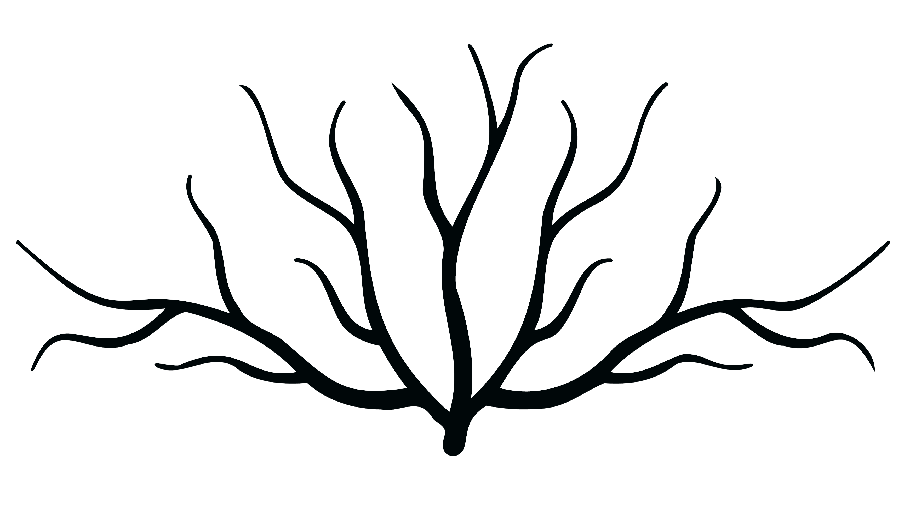

Scorri tutti i vocaboli
Vai a tutti i vocaboli

Esplora il lessico per radici
Vai a lessico per radici
Vuoi sapere di più su alcuni termini?
Vai al GlossarioLessico per campo semantico
Parola e discorsi
Sapienza e filosofia
Teatro ed arte
Leggi e tribunale
Politica e vita cittadina
Guerra e pace
Personaggi storici
Sacralità e religione
Emozioni
Scherno e volgarità
Cibo e compravendita
×
Il lessico legato al λογός, al discorso, è centrale nell'opera di Aristofane: dal sussurrare all'urlare, ai versi umani e non, la quantità di sinonimi e sfumature lessicali utlizzati è davvero vasta. Isolare questo particolare ambito nell'intero corpus del poeta mette in evidenza, inoltre, la consapevolezza di Aristofane di quanto il teatro ateniese di V secolo sia teatro di parola, più che di fatti: ancor più dei singoli snodi di trama o degli avvenimenti descritti, sono i dialoghi tra personaggi ad essere fondamentali, sia per la rappresentazione scenica che per la comprensione del messaggio dell'opera. Per finire, si prenda e.g. la parabasi, passaggio cruciale nelle commedie: in Aristofane è quasi sempre uno spazio in cui la commedia in sé viene messa da parte per lasciar posto ad un lungo discorso tenuto direttamente al pubblico presente; in questo modo, il poeta invade, per così dire, lo spazio teatrale per dar risalto ad un suo messaggio specifico.
Esplora tutte le modalità con cui Aristofane fa uso della parola e del discorso:
Lessico/Parola
Esplora tutte le modalità con cui Aristofane fa uso della parola e del discorso:
Lessico/Parola
×
La filosofia e la ricerca del sapere sono indissolubilmente legati alla cultura ateniese di V secolo, al punto che diventano temi importanti, e in alcuni casi centrali delle commedie di Aristofane: i vari σοφοί che popolano le sue opere ci danno un ritratto parodistico dei sapienti dell'epoca. Lo sviluppo della nuova corrente di pensiero, la sofistica e gli insegnamenti di Socrate sono temi dibattuti e spesso confusi dal popolo comune ed è naturale, quindi, che e.g. il ritratto di Socrate nelle Nuvole sia estremizzato e portato all'assurdo. Lo scontro tra un vecchio sapere e modo di vivere, spesso portato avanti in commedia dagli anziani e il nuovo sistema di saperi, promosso da giovani pronti a ribaltare il sitema di valori(vedi e.g. le Vespe) è ben rappresentato nelle commedie aristofanee, sempre attente agli umori cittadini. La critica alla nuova retorica, infine, completa il quadro del fermento intellettuale ateniese di cui Aristofane stesso non può che essere parte integrante.
Esplora tutte le modalità con cui Aristofane fa uso del lessico tecnico della filosofia e del sapere:
Lessico/Sapienza
Esplora tutte le modalità con cui Aristofane fa uso del lessico tecnico della filosofia e del sapere:
Lessico/Sapienza
×
Le arti sono parte integrante dell'educazione del cittadino ateniese, specialmente nell'età di Pericle ed è naturale, quindi, che siano spesso argomento delle commedie aristofanee: importantissima è la musica che spesso accompagna le declamazioni poetiche, i simposi e i banchetti, ma sono presenti anche la danza, la pittura, la scultura. Un posto d'onore, poi, ricopre il teatro: il lessico tecnico delle parti del testo, dell'edificio teatrale, dell'allestimento di uno spettacolo emerge a più riprese nell'intero corpus. Aristofane è ben consapevole dell'arte che pratica e dei suoi assiomi e gioca esplicitamente con essi più volte: la parabasi, il prologo, l'esodo diventano strumenti ancora più efficaci quando il poeta ora li usa tradizionalmente ora li innova.
Esplora tutte le modalità con cui Aristofane fa uso del lessico tecnico del teatro e delle arti:
Lessico/Arti
Esplora tutte le modalità con cui Aristofane fa uso del lessico tecnico del teatro e delle arti:
Lessico/Arti
×
I processi e i tribunali in un Atene democratica con diversi organi giudiziari con le loro diverse giurisdizioni non possono che essere parte della vita di un cittadino, soprattutto con la nascita e la grande diffusione della retorica e delle nuove tecniche locutorie che porta con sé sotto Pericle. I processi, che siano tra privati o contro la πόλις, aumentano sensibilmente in questo periodo grazie anche all'onorario promesso per la partecipazione e proprio Aristofane ci dà la conferma dell'opinione pubblica a riguardo: più volte nelle sue commedie viene attaccato un gruppo consistente di persone per cui partecipare ai processi è diventato un hobby quotidiano, si potrebbe dire(vedi e.g. fra tutte le Vespe). I delatori, poi, che vengono messi alla berlina e.g. negli Acarnesi sono, per il popolo comune, una piaga vera e propria, specialmente in tempi di guerra.
Esplora tutte le modalità con cui Aristofane fa uso del lessico tecnico del tribunale e delle leggi:
Lessico/Leggi
Esplora tutte le modalità con cui Aristofane fa uso del lessico tecnico del tribunale e delle leggi:
Lessico/Leggi
×
Il termine politica deriva da πολιτικά, ciò che riguarda la πόλις, e proprio in questo contesto storico è più che mai vero: la politica è vita cittadina, il privilegio e dovere più importante di un cittadino ateniese era quello di poter votare e deliberare in assemblea sulle decisioni della πόλις. Una πόλις governata da una democrazia diretta e che fa della vita pubblica e sociale una parte fondamentale e quasi obbligatoria delle vite dei singoli influenza, e non poco, gli spettacoli teatrali, visto che essi stessi sono gestiti da un magistrato, l'arconte eponimo. La vita cittadina nella sua interezza, poi, non può che essere centrale nella commedia di Aristofane poiché sono proprio i cittadini, gli stessi cittadini che hanno pagato per lo stipendio degli attori, ad essere il pubblico a teatro.
Esplora tutte le modalità con cui Aristofane fa uso del lessico tecnico della politica e della vita cittadina:
Lessico/Politica
Esplora tutte le modalità con cui Aristofane fa uso del lessico tecnico della politica e della vita cittadina:
Lessico/Politica
×
Gran parte del corpus aristofaneo è prodotto durante una delle guerre più grandi ed importanti della civiltà greca, la guerra del Peloponneso, ed Atene stessa è il leader di una delle fazioni nello scontro. La guerra ha sempre fatto parte della civiltà greca (e.g. le Guerre Persiane), ma questa guerra ha un effetto devastante negli animi degli ateniesi e dei greci in genere: Aristofane tratteggia abilmente il malumore dei contadini che si ritrovano i campi devastati dalle invasioni (vedi Acarnesi) e in generale di chi ha perso molto per gli scontri, ma anche la spacconeria dei soldati che millantano abilità guerriere, per poi abbandonare al più presto il campo di battaglia. Il sentimento generale che si respira nella prima parte della produzione aristofanea è di stanchezza dovuta alla guerra e di desiderio sempre maggiore per la pace ed il focus, a differenza degli avvenimenti singoli, come negli storiografi, è l'opinione della gente comune.
Esplora tutte le modalità con cui Aristofane fa uso del lessico legato alla guerra e alla pace:
Lessico/Guerra
Esplora tutte le modalità con cui Aristofane fa uso del lessico legato alla guerra e alla pace:
Lessico/Guerra
×
Esplora la lista di personaggi storici citata da Aristofane nelle sue commedie:
Lessico/Personaggi
Esplora la lista di personaggi storici citata da Aristofane nelle sue commedie:
Lessico/Personaggi
×
Esplora tutte le modalità con cui Aristofane fa uso del lessico tecnico della religione e dei riti sacri:
Lessico/Sacralità
Esplora tutte le modalità con cui Aristofane fa uso del lessico tecnico della religione e dei riti sacri:
Lessico/Sacralità
×
Esplora tutte le modalità con cui Aristofane fa uso del lessico legato alle emozioni umane:
Lessico/Emozioni
Esplora tutte le modalità con cui Aristofane fa uso del lessico legato alle emozioni umane:
Lessico/Emozioni
×
Esplora tutte le modalità con cui Aristofane fa uso del lessico legato allo scherno e alle volgarità:
Lessico/Scherno
Esplora tutte le modalità con cui Aristofane fa uso del lessico legato allo scherno e alle volgarità:
Lessico/Scherno
×
Esplora tutte le modalità con cui Aristofane fa uso del lessico legato alla compravendita e del cibo:
Lessico/Cibo
Esplora tutte le modalità con cui Aristofane fa uso del lessico legato alla compravendita e del cibo:
Lessico/Cibo